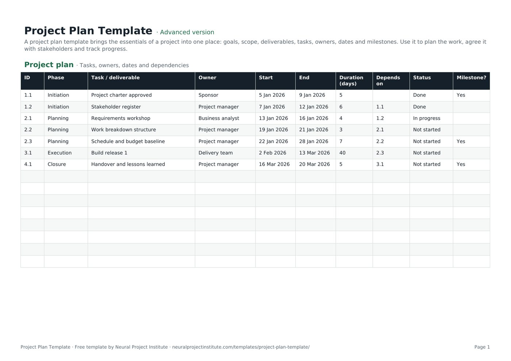

Free Project Plan Template (With Worked Example)
This free project plan template puts the essentials of a project in one spreadsheet: a task plan with phases, owners, start and end dates, dependencies, status and milestones, and a one-page overview of the goal, scope, budget, risks and success criteria. Download it for Excel, Google Sheets or PDF, then follow the step-by-step method and the worked example below to build your own plan.

Key takeaways
- A project plan sets out what will be delivered, who does each piece of work, when it happens and in what order, so that everyone works from the same picture.
- The template has two tabs: Project plan (ID, phase, task, owner, start, end, calculated duration, dependencies, status and milestone flag) and Overview (goal, scope, deliverables, budget, risks and success criteria).
- Build the plan from deliverables down: agree the goal, break the work into tasks, give each task one owner and dates, link the dependencies, then mark the milestones.
- The duration column counts calendar days, including weekends. Switch to working days with NETWORKDAYS if your estimates are in working days.
- A plan is only useful if it stays current: update status weekly and change the agreed dates only through change control.
Free download · no sign-up
Get the project plan template
Pick your level and format: Google Sheets, Excel or a print-ready PDF. Spreadsheets include dropdowns, formulas and sample rows you can overwrite.
What is a project plan?
A project plan is the document that sets out how a project will reach its goal: the deliverables, the tasks needed to produce them, who owns each task, when each task starts and finishes, how the tasks depend on each other and the milestones that mark progress. It is the shared reference the team, the sponsor and stakeholders use to agree and track the work.
A good plan answers five practical questions at a glance:
- What are we delivering, and what is out of scope?
- Who is responsible for each piece of work?
- When does each task start and finish, and when are the key milestones?
- In what order must the work happen, and what is waiting on what?
- How will we know we have succeeded?
The term is used in two ways. In everyday practice, "project plan" usually means the working plan of tasks, owners and dates, which is what this template gives you. In the PMBOK Guide, the project management plan is a broader document that describes how the project will be executed, monitored and controlled, and closed, and it brings together subsidiary plans for scope, schedule, cost, quality, risk, communications and more. For small and medium projects, this template plus a few supporting documents is usually enough. For large or regulated projects, it becomes the schedule and summary inside a fuller plan.
To understand the formal version and its components, see our guide to the project management plan.
Project plan template preview
The preview shows the first tab with its sample rows: a small project moving through initiation, planning, execution and closure. Every row is an example you can overwrite.
| ID | Phase | Task / deliverable | Owner | Start | End | Duration (days) | Depends on | Status | Milestone? |
|---|---|---|---|---|---|---|---|---|---|
| 1.1 | Initiation | Project charter approved | Sponsor | 5 Jan 2026 | 9 Jan 2026 | 5 | Done | Yes | |
| 1.2 | Initiation | Stakeholder register | Project manager | 7 Jan 2026 | 12 Jan 2026 | 6 | 1.1 | Done | |
| 2.1 | Planning | Requirements workshop | Business analyst | 13 Jan 2026 | 16 Jan 2026 | 4 | 1.2 | In progress | |
| 2.2 | Planning | Work breakdown structure | Project manager | 19 Jan 2026 | 21 Jan 2026 | 3 | 2.1 | Not started | |
| 2.3 | Planning | Schedule and budget baseline | Project manager | 22 Jan 2026 | 28 Jan 2026 | 7 | 2.2 | Not started | Yes |
| 3.1 | Execution | Build release 1 | Delivery team | 2 Feb 2026 | 13 Mar 2026 | 40 | 2.3 | Not started |
Sample rows are examples: replace them with your own.
What's in the project plan template
The template has two tabs. The Project plan tab is where the work lives. The Overview tab is a one-page summary you share with the sponsor and stakeholders.
The Project plan tab: column by column
| Column | What to enter | Tip |
|---|---|---|
| ID | A short reference such as 1.1, 2.3 | Use the phase number before the dot so IDs sort and group naturally; dependencies refer to these IDs |
| Phase | The stage the task belongs to, for example Initiation, Planning, Execution, Closure | Use the same phase names on every row so you can filter by phase |
| Task / deliverable | The piece of work or the output it produces | Start with a verb for tasks ("Run requirements workshop") or a noun for deliverables ("Stakeholder register") |
| Owner | The one person or team accountable for the row | Name a person where possible; a team name hides who is actually responsible |
| Start | The planned start date | Enter real dates so the duration formula works |
| End | The planned finish date | Must be on or after the start date |
| Duration (days) | Calculated automatically from Start and End | Counts calendar days including the start and end date, so a Monday to Friday task shows 5 |
| Depends on | The ID of any task that must finish first, for example 2.1 | Separate several IDs with commas; leave blank if the task can start at any time |
| Status | Not started, In progress, On hold, Blocked or Done (dropdown) | Update weekly; "Blocked" should always come with a note in your status report |
| Milestone? | Yes or No (dropdown) | Flag zero- or short-duration checkpoints such as approvals, sign-offs and go-live |
The Overview tab
The Overview tab has two columns, Item and Details, with ten items to complete: project name, sponsor, project manager, goal (SMART), in scope, out of scope, key deliverables, budget, key risks and success criteria. The goal row includes an example to show the level of precision to aim for: "Launch the customer portal by 31 March to cut support calls by 30%".
- Project plan: ID, Phase, Task / deliverable, Owner, Start, End, Duration (days), Depends on, Status, Milestone?
- Overview: Item, Details
Beginner, advanced or expert: which version should you download?
All three versions come as an Excel file, a Google Sheet and a print-ready PDF. They differ in how much structure they add:
| Version | What you get | Best for |
|---|---|---|
| Beginner | One tab with six essential columns: ID, Task / deliverable, Owner, Start, End and Status (with a status dropdown) | Short projects, personal plans and first-time planners who want a simple task list with dates |
| Advanced | Both tabs and all ten plan columns, including Phase, the automatic duration formula, Depends on, and the Status and Milestone? dropdowns | Most projects: the full plan you agree with a sponsor and update weekly |
| Expert | Everything in Advanced plus an Instructions tab, a Dashboard that counts tasks by status and by owner automatically, a Revision history tab, status colours, and end dates highlighted in red once they pass while a task is not yet Done | Projects you report on regularly, client work, and PMOs that need version control |
What should a project plan include?
Most project planning guidance agrees on a core set of components. This table shows each one, where it goes in the template and why it matters.
| Component | Where it goes | Why it matters |
|---|---|---|
| Goal and objectives | Overview: Goal (SMART) | Every task should contribute to it; see how to write project objectives |
| Scope and exclusions | Overview: In scope, Out of scope | Clear exclusions are your best defence against scope creep |
| Deliverables | Overview: Key deliverables; plan rows | The outputs the sponsor will accept; they become the top of your work breakdown |
| Tasks and phases | Project plan: Phase, Task / deliverable | Turns deliverables into work people can do and estimate |
| Owners | Project plan: Owner | One accountable name per row prevents work falling between people |
| Dates and durations | Project plan: Start, End, Duration | Shows when work happens and how long it takes |
| Dependencies | Project plan: Depends on | Shows the order of work and which delays will move the end date |
| Milestones | Project plan: Milestone? | Gives the sponsor clear checkpoints to track |
| Budget | Overview: Budget | Sets the financial limit the plan must fit within |
| Risks | Overview: Key risks | Highlights what could disrupt the plan; detail goes in a risk register |
| Success criteria | Overview: Success criteria | Defines how you will judge the project at closure |
| Progress | Project plan: Status | Turns the plan into a tracking tool |
Some planning documents are better kept separately and linked from the plan rather than squeezed into it: the full risk register, a RACI matrix for who is responsible, consulted and informed, a communication plan and a detailed project budget. Record the headline in the Overview tab and keep the detail where it can be maintained properly.
How to create a project plan step by step
Work through these steps in order. The first three are mostly conversation; the spreadsheet work starts at step 4.
- Agree the goal with the sponsor. Confirm why the project exists, what success looks like, the budget and any fixed dates. If you have a signed project charter, start from it; the plan must stay within what the charter authorised.
- Complete the Overview tab. Write a SMART goal, list what is in and out of scope, name three to seven key deliverables, and record the budget, top risks and success criteria. If you cannot fill a row, that is a question to take back to the sponsor before you plan any further.
- Break the deliverables into tasks. Use a work breakdown structure to split each deliverable into pieces of work small enough to estimate and assign. Group them into phases and give each row an ID such as 1.1, 1.2, 2.1.
- Assign one owner to every task. The owner is accountable for getting the task done, even if several people work on it. If you cannot name an owner, the task is probably too vague or nobody has agreed to do it yet.
- Estimate and enter the dates. Ask the owner how long the work will take, then enter start and end dates. The duration column calculates automatically. Our guide to effort estimation covers techniques such as three-point estimates for uncertain work.
- Link the dependencies. For each task, enter the ID of any task that must finish before it can start in the Depends on column. Then check that every start date falls after the end date of the tasks it depends on. The template records dependencies as text; it does not move dates for you, so this check matters. See task dependencies for the four dependency types.
- Mark the milestones. Set Milestone? to Yes for approvals, sign-offs, go-live and handover. Three to eight milestones is typical for a project of a few months. Read more on setting project milestones.
- Review the plan with the team, then the sponsor. Walk the team through it first to test estimates and dependencies, then agree it with the sponsor. Once agreed, save a copy as your baseline so you can compare actual progress against it.
- Update it every week. Change the Status column, adjust forecast dates for work in progress and raise any slipping milestones in your status report.
How detailed should a project plan be?
Plan at the level of detail you can keep up to date. For a project of a few months, tasks of roughly one to two weeks usually work well: small enough that slippage shows quickly, large enough that the plan does not turn into a to-do list. Many teams plan the next phase in detail and keep later phases as a few summary rows, adding detail as they approach (an approach often called rolling wave planning).
If a single task runs for more than a month, consider splitting it into deliverables someone can check. If you have hundreds of rows for a small project, merge the tiny tasks and keep the detail in each owner's own task list.
Project plan example: website relaunch
Here is a complete example built with the template: a marketing team relaunching its company website over roughly three months, starting in January 2027. First, the Overview tab:
| Item | Details |
|---|---|
| Project name | Website relaunch |
| Sponsor | Marketing director |
| Project manager | Digital project manager |
| Goal (SMART) | Launch the redesigned website by 31 March 2027 and increase enquiry form submissions by 20% within three months of launch |
| In scope | New design templates, rewrite of the 40 highest-traffic pages, migration of remaining pages, redirects |
| Out of scope | Online shop, new CRM integration, translated versions |
| Key deliverables | Approved designs, rewritten priority pages, live website, handover pack |
| Budget | Internal team time plus an agreed external development budget |
| Key risks | Content owners late with page approvals; redirect errors losing search traffic |
| Success criteria | Site live by 31 March, no broken redirects for top pages, enquiry target met by 30 June |
Then the Project plan tab. Durations are calculated by the template's formula (calendar days, start and end dates included):
| ID | Phase | Task / deliverable | Owner | Start | End | Days | Depends on | Milestone? |
|---|---|---|---|---|---|---|---|---|
| 1.1 | Initiation | Charter signed | Sponsor | 4 Jan | 8 Jan | 5 | Yes | |
| 1.2 | Initiation | Stakeholder interviews | Project manager | 11 Jan | 15 Jan | 5 | 1.1 | |
| 2.1 | Planning | Sitemap and content inventory | Content lead | 18 Jan | 22 Jan | 5 | 1.2 | |
| 2.2 | Planning | Plan and budget baselined | Project manager | 25 Jan | 27 Jan | 3 | 2.1 | Yes |
| 3.1 | Execution | Design templates | Designer | 28 Jan | 17 Feb | 21 | 2.2 | |
| 3.2 | Execution | Rewrite priority pages | Content lead | 28 Jan | 26 Feb | 30 | 2.2 | |
| 3.3 | Execution | Build and migrate site | Developer | 18 Feb | 19 Mar | 30 | 3.1 | |
| 3.4 | Execution | User acceptance testing | Project manager | 22 Mar | 26 Mar | 5 | 3.2, 3.3 | |
| 3.5 | Execution | Go-live | Developer | 29 Mar | 29 Mar | 1 | 3.4 | Yes |
| 4.1 | Closure | Handover and lessons learned | Project manager | 30 Mar | 2 Apr | 4 | 3.5 | Yes |
What the example shows
- The longest chain sets the end date. Follow the dependencies from 1.1 through 3.1, 3.3, 3.4 and 3.5 to 4.1: there is no gap between these tasks, so any delay on them moves go-live. This is the project's critical path. See the critical path method for how to calculate it formally.
- Some tasks have room to move. Rewriting the pages (3.2) finishes on 26 February, but testing (3.4) cannot start until 22 March because it also waits for the build. The content work has about three weeks of slack, so the project manager can absorb a late page approval without moving go-live. Read more on float and slack.
- Parallel work shortens the project. Design and content start on the same day because both depend only on the baseline (2.2).
- Milestones are decisions, not work. The charter, the baseline, go-live and handover are the points the sponsor cares about.
- Every row has one owner. The sponsor even owns a row: signing the charter is their task.
Calendar days or working days?
The Duration (days) column uses the formula =End − Start + 1, which counts calendar days including weekends. In the example, "Design templates" runs from Thursday 28 January to Wednesday 17 February: 21 calendar days, but only 15 working days.
If your team estimates in working days, replace the formula in the first plan row with =NETWORKDAYS(E6,F6) (row 6 is the first task row; columns E and F hold Start and End) and copy it down. NETWORKDAYS works in both Excel and Google Sheets and excludes Saturdays and Sundays; you can add a range of public holiday dates as a third argument. Whichever you choose, use the same convention for every row and tell the team which one it is.
How to keep the project plan up to date
A plan that is not updated becomes a record of what you once hoped would happen. A short weekly routine keeps it honest:
- Ask each owner for status. Update the Status column: Not started, In progress, On hold, Blocked or Done.
- Check dates on work in progress. If a task will finish late, record the new forecast and check which tasks depend on it using the Depends on column.
- Look at the next two to four weeks. Make sure the upcoming tasks have owners who know they are starting, and that the tasks they depend on are on track.
- Filter for problems. Use the column filters to show Blocked and On hold rows, and rows whose end date has passed but are not Done. The expert version highlights overdue end dates in red automatically.
- Report it. Summarise milestones, blocked tasks and decisions needed in your project status report. In the expert version, the Dashboard tab gives you the count of tasks by status and by owner without any extra work.
- Change the baseline only through change control. If the sponsor approves a change to scope, dates or budget, update the plan and record the change. Use a change request and follow your change control process so that the history of decisions is clear.
Keep one live copy of the plan, shared as a link rather than emailed attachments. In the expert version, add a line to the Revision history tab each time you re-baseline or make a significant change.
Project plan vs other planning documents
Several documents overlap with the project plan. This table shows how they fit together.
| Document | Main question it answers | Relationship to the project plan |
|---|---|---|
| Project charter | Is the project authorised, and within what limits? | Comes first; the plan must stay within it. See the project charter template |
| Project scope statement | Exactly what will and will not be delivered? | Expands the Overview's scope rows. See the project scope template |
| Work breakdown structure | What are all the pieces of work? | Feeds the task rows of the plan. See the WBS template |
| Project schedule | When does each activity happen, in what sequence? | A more detailed timing view; the plan's dates are a summary schedule. See the project schedule template |
| Gantt chart | What does the timeline look like? | A visual view of the plan's start and end dates. See the Gantt chart template |
| Project management plan | How will the whole project be managed and controlled? | The formal umbrella document; this template can serve as its schedule and summary |
| Agile release or sprint plan | What will each iteration deliver? | Replaces task-level dates with sprints and backlog items. See the Agile project plan template |
For the theory behind these documents and the order they are usually produced in, see our guide to project management phases.
Using the template in Excel and Google Sheets
In Excel
- Download the .xlsx file for your chosen version and open it in Excel.
- Overwrite the sample rows with your own tasks. The extra formatted blank rows below the samples are ready for more tasks.
- If you add rows beyond the formatted area, copy the Duration (days) formula down from the row above so it keeps calculating.
- Use the filter arrows in the header row to show one phase, one owner or one status at a time.
- Save the file in a shared location such as SharePoint or OneDrive and share the link, so there is only one current version.
In Google Sheets
- Click the Google Sheets button for your chosen version. Google asks you to make a copy into your own Drive.
- Rename the copy with your project name and replace the sample rows.
- Share it with the team, giving edit access to task owners if they will update their own status, or comment access if the project manager makes all changes.
- Alternatively, upload the .xlsx file to Drive and open it with Google Sheets; the dropdowns and formulas carry across.
As a PDF
The PDF is a print-ready version of the same layout. Use it to read through the structure, to work on paper in a planning workshop, or to share a fixed snapshot. Use the spreadsheet for the live plan.
When to move beyond a spreadsheet
A spreadsheet plan works well for a single project with a small team. If you need dependencies that move dates automatically, an interactive Gantt chart, resource workloads across several projects or real-time updates from many contributors, project management software is usually a better home. Wrike, our top-rated tool, can import spreadsheet task lists and handles dependencies, Gantt views and cross-project reporting well.
Project plan tips and common mistakes
Tips
- Plan backwards from fixed dates. If go-live is fixed, start from that date and work back through the dependencies to see when each task must start.
- Put buffer where the risk is. Add contingency to the uncertain tasks, or as a visible buffer before a key milestone, rather than quietly padding every estimate.
- Write tasks people recognise. Owners should be able to read their row and know exactly what is expected.
- Agree resourcing, not just dates. Check that owners have time for the work alongside their other commitments. Our guide to resource allocation explains how.
Common mistakes
| Mistake | Why it causes trouble | Fix |
|---|---|---|
| Planning without the sponsor's agreed goal | You plan the wrong project, or the right project to the wrong standard | Complete the Overview tab and agree it before you add tasks |
| Too much detail | Nobody can keep hundreds of rows current, so the plan goes stale | Use tasks of about one to two weeks; detail the next phase only |
| Shared or missing owners | Everyone assumes someone else is doing it | One accountable owner per row |
| Dependencies not recorded | A delay on one task silently moves others | Fill in Depends on, then check every start date against it |
| Mixing calendar and working days | Durations look inconsistent and estimates do not match | Choose one convention for the Duration column and say which |
| Changing dates without a record | Nobody can tell how far the project has drifted | Keep a baseline and change it only through change control |
| Emailing copies | Several versions circulate and people work from old dates | Share one live link |
Related templates and guides
The project plan sits in the middle of the planning documents. Before it, a project charter authorises the work and a project scope template pins down the boundaries. Alongside it, the work breakdown structure template breaks down the deliverables, the critical path template finds the tasks that set the end date, and the risk register template tracks what could go wrong. During delivery, a project tracker helps with day-to-day progress, and at the end a lessons learned template captures what to repeat next time.
 Project Charter TemplateFree project charter template covering purpose, objectives, scope, milestones, budget,…Beginner · Advanced · Expert
Project Charter TemplateFree project charter template covering purpose, objectives, scope, milestones, budget,…Beginner · Advanced · Expert Work Breakdown Structure (WBS) TemplateFree work breakdown structure template with WBS codes, levels, deliverables, owners,…Beginner · Advanced · Expert
Work Breakdown Structure (WBS) TemplateFree work breakdown structure template with WBS codes, levels, deliverables, owners,…Beginner · Advanced · Expert Project Schedule TemplateFree project schedule template with tasks, durations, dependencies, start and end dates,…Beginner · Advanced · Expert
Project Schedule TemplateFree project schedule template with tasks, durations, dependencies, start and end dates,…Beginner · Advanced · Expert Gantt Chart TemplateFree Gantt chart template: tasks, owners, dates and a week-by-week timeline you fill in.…Beginner · Advanced · Expert
Gantt Chart TemplateFree Gantt chart template: tasks, owners, dates and a week-by-week timeline you fill in.…Beginner · Advanced · Expert Project Brief TemplateFree project brief template for a one-page project overview: background, goals, audience,…Beginner · Advanced · Expert
Project Brief TemplateFree project brief template for a one-page project overview: background, goals, audience,…Beginner · Advanced · Expert Action Plan TemplateFree action plan template with goal, actions, owners, deadlines, resources, success…Beginner · Advanced · Expert
Action Plan TemplateFree action plan template with goal, actions, owners, deadlines, resources, success…Beginner · Advanced · Expert- Project Management Plan: Components, Steps and Example
- Work Breakdown Structure (WBS): Examples and How-To
- Project Scheduling: Steps, Techniques and Example
- Project Milestones: Definition, Examples and How to Set Them
For the techniques behind building and sequencing a schedule, read our project scheduling guide.
Frequently asked questions
What is a project plan template?
A project plan template is a ready-made spreadsheet or document for recording a project's goal, scope, deliverables, tasks, owners, dates, dependencies and milestones. This one has a Project plan tab for the task plan and an Overview tab for the one-page summary.
Is this project plan template free?
Yes. The project plan template is free to download as an Excel file, a Google Sheet or a PDF, in beginner, advanced and expert versions, with no sign-up.
What should a project plan template include?
At minimum: a goal, scope and exclusions, key deliverables, tasks grouped into phases, an owner for each task, start and end dates, dependencies, milestones, budget, key risks, success criteria and a status for each task.
How do I create a project plan in Excel?
Download the .xlsx project plan template, fill in the Overview tab, then list your tasks on the Project plan tab with an owner, start and end date for each. The duration calculates automatically, and the Status and Milestone? columns have dropdowns.
Can I use the project plan template in Google Sheets?
Yes. Use the Google Sheets button to make your own copy in Google Drive, or upload the .xlsx file to Drive and open it with Google Sheets.
What are the main steps to write a project plan?
Agree the goal with the sponsor, define scope and deliverables, break the work into tasks, assign owners, estimate dates, link dependencies, mark milestones, review and baseline the plan, then update it weekly.
What is the difference between a project plan and a project schedule?
A project plan covers the goal, scope, deliverables, owners, budget and risks as well as dates. A project schedule focuses on the timing and sequence of activities in more detail.
What is the difference between a project plan and a project management plan?
In everyday use a project plan is the working plan of tasks, owners and dates. The project management plan described in the PMBOK Guide is a broader document covering how scope, schedule, cost, quality, risk and communications will be managed. See our project management plan guide.
How detailed should a project plan be?
Detailed enough to show slippage quickly, but not so detailed that you cannot keep it current. For a project of a few months, tasks of about one to two weeks work well, with more detail for the next phase than for later ones.
Who is responsible for the project plan?
The project manager owns and maintains the plan. Task owners provide estimates and status updates, and the sponsor approves the plan and any changes to its baseline.
How often should a project plan be updated?
Update status at least weekly during delivery, and update dates or scope whenever an approved change affects them.
Can I turn the project plan template into a Gantt chart?
Yes. Copy the tasks and dates into our Gantt chart template, add a stacked bar chart in Excel or Google Sheets, or import the task list into project management software such as Wrike.
Can I use this project plan template for Agile projects?
You can use the Overview tab and milestone rows for release dates, but Agile teams usually plan work in sprints from a backlog. The Agile project plan template is built for that, and our guide on the role of the project plan in Agile explains how the two fit together.